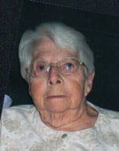

PRINTED
Thursday, April 01, 2010
We were up at 5AM and started the day. I met with Lee and Elder Judd. We determined what needed to be taken care of by Elder Judd and I for tomorrows training meetings. Mae and Sister Judd went to Bakersfield shopping for food supplies for tomorrow. Lee met them at Costco to pay for the food. After Brother Judd and I got the things done we needed to I went home and loaded the trash from the shed I tore down yesterday and hauled it off. I got home before Mae did. After lunch we lay down and took a nap. When we got up we washed fruit for tomorrow. We worked on the computer correcting some notes Mae had made of our first tour around the farm. We talked to Jeff on the phone and tried to get on the internet to try the camera, but we couldn’t get a good connection. Mae talked to Benji and Rachael on the phone. Somehow Rachael thought that Mae was coming to their place and when the door bell rang she shouted “Here comes Grandma.” It was really some Missionaries and David told them they could come back another day. I started this entry but Mae wanted me to go to bed as we are getting up early tomorrow. When she reminded me the third time I got a little upset with her. It didn’t make for the best feelings as we went to bed. We hadn’t been in bed very long when the phone rang. It was the full time missionaries calling to let us know that they wouldn’t be eating dinner with us tomorrow evening. I didn’t sleep very well and have quite a bit of pain in my joints tonight. Maybe I have got to lay off the nuts.
Friday, April 02, 2010
I got up at 3:30AM and let Mae sleep until 4AM. I made the bed while Mae got her hair done. We both worked together to fix breakfast. We were at the shop by 5AM and ready to serve the men by 5:30AM. it was cold and we didn’t have much to do until the classes break at 8:30AM so Sister Judd took Mae home. Elder Judd and I went to the bowery and got the folding tables. We had just got the tables set up when Mae called and said that she didn’t have her keys to the house. I came home to let her in. I worked on the computer for a while before we returned to the shop. We, Lee, Elder and Sister Judd, Mae and I prepared lunch for the men. When they finished the training continued. We cleaned up leaving some finger foods out for the afternoon break. After cleaning up Mae went home, I returned to Floyd’s Ace Hardware, where we rented them yesterday. I came on home and took a nap. When I got up we went into Bakersfield and bought some groceries at the Health Store. Mae and I then went out to eat at Sizzler. After eating we went to Wal-Mart and bought some more groceries to have on hand when Bob and Carroll come next week. As we got off the freeway and onto Lerdo Hwy we drove west until we crossed the canal. There we took off the hwy onto the dirt road that runs along the side of the canal. I found this way home and it save a little distance but is a pleasant way to drive. We hadn’t gone far when a large owl flew up and went along the canal in front of us. Its wing span was 3 to 4 feet. It was beautiful and fun to watch. After a short distant it flew onto a tree branch and just watched us drive by. We got a good look at it perched on the branch. Before going to bed Mae and I played some Rummy. Mae won our game tonight.
Saturday, April 03, 2010
I didn’t sleep very well last night so when I woke early I went back to sleep in the recliner. I was woke about 5:50AM with noises from outside. Men were getting some equipment from the shop. They seemed to have keys to the gate so I didn’t do anything. I really don’t know the schedule that is kept at the yard so it is hard for me to monitor it. We got up thinking that we would have time to get the conference set up on the computer but after 1 ½ hours, even with Scott’s help over the phone, we gave up. This afternoon we went to the chapel to watch General Conference there. I brought Mae back home and then went right back as the Brothers had a lunch before the Priesthood session. I really enjoyed the Priesthood session. I was cold when I got home so cuddled up in a blanket for a while. Mae was working on the computer. I entered this entry and then Mae and I played a game of Rook before going to bed. Mae won the first game and I won the second game.
Sunday, April 04, 2010
We got up and had breakfast and then attended the General Conference Broadcast by going to our chapel where it was received by satellite. We really enjoyed the Conference and felt great guidance from the talks. We came home and prepared some dinner, ate and cleaned things up and left to return to Conference. It takes us about 25 minutes to get to our chapel and the round trip is about 25 miles. I guess pour inter-net reception and travel to get someplace is the price you pay for living out in the country. This morning’s session had several in attendance, but this afternoon there was only Mae and I, the two full time Elders and one Spanish Brother. David and Shellie called on Wednesday, Scott and Jeff called this morning and Sandi called and visited with us as we drove to conference this afternoon. On the way home Mae read from our book. I also took a little scenic tour and saw some houses under construction. We had a light super and Mae made me some Deviled eggs as it is Easter. We read the last of the book this evening. It has sure been a good book but now we have to find another to start. We played a game of Rummy before going to bed. Mae is ahead but we quite for tonight as it is late.
Monday, April 05, 2010
I worked on removing the picket fence around the yard. I used the farms trailer and got it all loaded and ready to take to the dumps. Mae went with me and we went to Hydro Tec Irrigation Co. in Delino and met with the engineer there that planned the sprinkler system for the yard. I pointed out a couple of problems in the layout and he will correct those and the company will deliver the materials to the house Tuesday or Wednesday. We did some shopping on the way home. Mae prepared a very nice dinner and we watched the first of the “Anne of Green Gables”. That is a very enjoyable series and though we have seen them before we still enjoyed it again.
Tuesday, April 06, 2010
I met with Lee and Elder Judd and then took the trailer load of the fencing from around the house to the dumps. I called Hydro Tec Irrigation Co and visited with the engineer about the yard. From there I went to United Rental in Bakersfield and rented a rotor-tiller. When I got home Mae had gone with Sister Judd to a Tri-Stake dinner for Senior program and luncheon. I got me something to eat and then took a nap. After getting up I tilled the yard. Lee came out because I called him about a couple of decisions. He agreed with my ideas plus he said that he would line up some Mexicans to level the yard with rakes tomorrow. I finished the tilling yard, helped Frolan move a portable outhouse to the back yard, loaded the tiller onto its trailer and called it quite for the day. I laid on the chee machine, then on the inversion table and then took a shower. Mae had dinner ready. After dinner I started my journal. Mae had got an e-mail from Luan Fredickson. She is a lady that lives in Mike and Becky’s Ward and is having similar health problems as I do. I compiled a letter to her and suggested that she sees Nancy. I had to call David to find out how to spell Podiatrist and it was an excuse to visit with him for a few minutes. He is concerned about our safety as we live so far from anyone else. That is somewhat of a concern and I have also thought that when we get the fence in we maybe should get a dog. It’s now after 9PM so we had better get to bed.
Wednesday, April 07, 2010
We were late getting up but at 7:30 when I went to leave, I called Lee. He said to continue to work on the lawn. I noticed a leveling rake out by my car and then I noticed that the rock in the back yard had been moved. When I asked Lee about the rock he said that he had been here at 6AM and moved it. He sent some Spanish works out and they helped me rake the yard down. I went to Bakersfield and returned the rotor-tiller and brought back a roller. They yard was about raked when I got home. I rolled the yard and then my help raked it down once more. I helped them clean the trash up and load it into the pickup before they left. I took the trash up to the burn pile and then Mae and I returned the roller to United Rental. Bob and Carroll got here about 3PM. We sure enjoyed having them come. We showed them a little of the farm after dinner. Mae had prepared a very nice dinner that we really enjoyed. We played a game of Canasta in which Mae and Carroll really beat Bob and I. it was late when we went to bed.
Thursday, April 08, 2010
I got up at 6AM and let Mae sleep in. I went out to Hydratec and picked up the sprinkler plans. I was also able to find a top to one of the valves so that I now have five working valves. I stopped at Home Depot and bought some grass seed for the lawn. I got gas in my pickup at the plant and picked up some tools at the Kimberlina shop. The fencing company got to ore place just before I got there. I worked on laying out the sprinkler lines and set the valve box. Bob cooked liver and onions for lunch and they were sure good. Mae cut both Bob’s and my hair today. I took a short nap after lunch and then worked more on the sprinkler layout. Bob helped me measure out the head locations. After dinner this evening we played a game of Canasta. After two hands we stopped, as Karen and Charles Hyer came by. They are on their way to see one of their children that lives in the L.A. area. Charles and I visited and I showed him a little of the trees in our area, then Mae had dinner for them. We visited with them while they ate. They felt like they should go on although we invited them to stay overnight with us. After they left we finished the game but Mae and Carroll beat us so far that the game wasn’t even fun. I filled in this entry and went to bed.
Friday, April 09, 2010
We got up late. After breakfast Chuck and Karen came back. I took them over to Kimberlina shop and showed them the harvesting equipment. We then went over to the plant where Travis Jones took us thru a tour of the processing plant. Travis is the processing supervisor as well as our Wards Elder Quorum President. I was concerned with Carroll being able to walk that far but she refused to quite. We all enjoyed the tour even though Mae and I have been through it before. Chuck and Karen left from there and we came back home. When we got back the fence company was there and they finished up the job before the day finished. I was very pleased with the job they did. After lunch we took naps. Bob and I then went to town and washed both cars and gassed them up. After doing that we came back home and got the pickup and went to Bakersfield to the Home Depot where we bought some parts for the sprinkler system. Bob and I cooked steak for dinner and got it all ready. This evening we again played a game of Canasta and Bob and I did much better tonight but they still beat us. I entered this entry and we went to bed.
Saturday, April 10, 2010
We got up shortly after 6AM as we wanted to get away to Fresno about 9AM. Bob prepared biscuits and gravy for breakfast. They were sure good and though I am not supposed to eat them I had 3 ½ biscuits and sure enjoyed them. It was almost 9:30AM before we left for Fresno. We had to stop for a potty break and lost a little time. We enjoyed visiting with Roy and Linda. We cooked some steak and chicken for lunch. While Roy was getting the barbeque going I got into the hot tub. It was so relaxing that I fell asleep and Bob came over and woke me because he was afraid that I might fold up and go under. We sure had a lot to eat. This afternoon we played Phase 10 and that was a lot of fun. It was 9:45PM when we got home. I filled in this journal entry and we soon went to bed.
Sunday, April 11, 2010
We didn’t get up until 7AM and that gave us plenty of time to get ready for meeting. The Sacrament and Fast meeting were very enjoyable. We didn’t stay for the other meetings as Carroll can’t sit that long. Mae had a roast cooking when we got home. The gravy was too salty so we cooked a potato in the gravy to absorb the salt. That is something I was taught by my Grandmother. We had dinner completely ready before Roy and Linda arrived. They missed the turn on Cherry and I had them turn around and come back to Cherry Street. It was a wonderful dinner. We sure enjoyed visiting and then playing a game of “Mormon Bridge” and a game of “Knock”. We then visited for quite a while before Roy and Linda left for home. Mae and I had a small bowl of apple sauce and some toast for super. We then visited with Bob and Carroll for a while before I filled out this entry and we went to bed.
Monday, April 12, 2010
I got up at 6AM and let Mae sleep in a little longer. Lee called before I left for the office and asked me to meet he and Elder Judd at his home in Shafter. He had questions about a bearing wall and I gave him a few suggestions. Hydertec called and wanted to know the delivery address for my sprinkler parts. I gave the driver the address and then I came out and met him. Bob and Carroll got away 9:30AM and are planning to drive as far as Mesquite Nevada and stay overnight there. It has sure been enjoyable having them here and I believe that they enjoyed it also. I worked on the sprinkler plans and the parts. I have questions about the layout and so I called Lee. He came over about 5PM and we discussed the plan. Mae and I went for a walk this evening. We read from “Preach My Gospel” for a while. We watched “Big Country” on DVD and was late getting to bed.
Tuesday, April 13, 2010
This morning Lee, Elder Judd and I met for a little while to go over a couple of bids and try to decide what to do. The gas company will not let us run new line to the second houses and the one that is there is not large enough to supply gas for both houses. We decided that we will have to make the duplex total electric. Elder Judd had me go with him to the Wasco trailer house to check out a leaky faucet. The faucet is a strange make that neither of us recognized. We will have to replace the faucet. Mae went with me to Durango to the Hydertec Co. to get more parts. On the way home we stopped at the Post Office and mailed the charger to Carroll’s cell phone to her. They had left it at our place when they left. We also stopped at home Depot and I purchased a new faucet for the Wasco house. After getting home we ate dinner and then I made up some of my Mannatect capsules before we went to bed.
Wednesday, April 14, 2010
I went over to Shafter and rented a trencher from Floyd’s. I worked all morning with the trencher digging for the sprinkler lines. I had to modify the layout as there were too many tree roots in the way. I quite work for lunch about 12:30PM. I thought I might get a short nap but Lee sent two Mexicans over to help me with the trenching. I had them clean out the trenches with trenching shovels while I finished digging with the trencher. I had just finished trenching and with the help of the two men we loaded the trencher into the pickup, when Bishop Birch and Merrell ------ came out to look at the home. Merrell is the new company assistant manager. Merrell had not seen the house since it had been remodeled during this past year. I invited him in and Mae took him through the home. I returned the trencher back and purchased some needed parts with the modification to the layout. When I returned I hooked up the main line so that it is ready to hook up to the valve box. My helpers quite at 4PM but will be back at 6:30AM tomorrow. When I got the water back on to the house, Mae had dinner ready. After dinner we took a walk down to the South pump pond. We enjoy being together and we enjoy looking at the development of the Pistachios. Mae picked a blossom from both the male and female pistachio tree and we made a display sheet so we could take pictures of them. I took a hot bath, laid on the inverter table and then laid on the Chee machine. Mae was on the phone most of that time with Scott’s family. I caught my journal up and we went to bed.
Thursday, April 15, 2010
I was up early as my Mexican help came at 6:30AM. I would lay out the lines and my help would glue it together. We worked all day and by the afternoon had all the lines installed. Mae went Visiting Teaching with her companion most of the morning. At noon she went to a planning meeting at the main office. Several met and made plans and made assignments to hold a company social at the park and bowery at the Kimberlina home area. When Mae returned home she prepared dinner and then she went back Visiting Teaching. I quite for the day as I was very tired having worked all day. A gentleman stopped to ask me if I had a compressor as he had a flat tire on his motorcycle. I took him over to the shop and he used the air hose there but the tub blow qhen he started to fill it with air. I let him use my phone to call his wife to have her come and get him. He returned later in the evening with a trailer and hauled his motorcycle home. While Mae was gone this evening I watched “Mr.Krueger’s Christmas” on DVD. I then watched “Emma Smith, My Story”. Mae returned shortly before it finished. I finished this entry and went to bed, in quite a bit of pain.
Friday, April 16, 2010
We enjoyed sleeping in this morning. Last night Lee asked me if I wanted helpers today but for two reasons I told him that I didn’t need them today. First I didn’t want to get to work at 6:30AM this morning and second I didn’t feel that I could keep them busy. After getting up and having breakfast I went to Shafter for some parts at Floyd’s. I got the entire main water hookup put together, leaving it so I can still add the strainer when it comes. I got the electrical setup for the timer and ran water through each zone to wash the lines out. I next mounted all the heads and finished the back filling. I quite at 5PM and came in and showered as the Judd’s are coming for dinner. Mae has busy getting things straightened out with Cricket. They will refund the first months charge as we couldn’t get it to work here in California. We gave up trying to get them to refund the cost of the Broad Band receiver. Mae did get our checking account working on Quicken and that has taken her some learning on this new computer. She also came out and helped me a couple of time when I needed an extra hand. I sure love being around here even when we are doing separate work. Mae had a nice dinner ready when the Judd’s came. They were a few minutes late as Lee needed them for a few minutes. After eating we played Mormon Bridge and then a game of Knock. We enjoyed playing games and visiting. As they left we could hear frogs crocking so after they drove away Mae and I got into my truck and drove down the road with the windows open. We only went 300 feet down the road where there was a mud puddle about 100 ft long and 3 or 4 feet wide. We could hear the crocking coming from that area. With my flash light we could pick out a ½ a dozen pair of eyes. They quickly vanished when we moved the light off them and all went quiet. We drove on to the canal and went up through the orchard but we didn’t hear any more crocking. When we got back to the house and was about to go in, the crocking started up again. I finished this entry and Mae did up the dishes. I went in and helped her before we went to bed.
Saturday, April 17, 2010
We slept in but then got up as we are to be into the park in Shafter at 9AM for a Ward service project. Mae made hot cakes for breakfast. Last night Elder Judd told us how to make Almond Milk, so we made it up this morning. It turned out great. When we got to the park no one else was there. Mae and I went for a walk. We went over to Lee and Kim’s home and spoke to them for a few minutes. They are trying to get the house remodeled and painted so that they can move in to it. They have had it rented to one of their children. From there we decided to go to Floyd’s for tools to pick up the garbage with. I also bought some small screw drivers to adjust the sprinkler heads with. I also bought a new pocket knife. When we got back to the park there was a good group from the Ward. We enjoyed picking up the trash and then we had a lunch and visited for a while. I was reminded of the story told. How many Mormons does it take to change a light bulb? Ten! One person to hold the ladder. One to climb the ladder and change the bulb and 8 people to plan and prepare the refreshments. It was a good morning. On the way home we washed the car. We had a call from Sandi on the phone when we got home. Mae called back and Sandi told us that she had ran a 13 ½ mile marathon this morning. She was very pleased with the outcome and that she had done it. She also told us that Hope, Terry’s stepmother passed away yesterday afternoon. I am sure that Terry was there to meet her. She has suffered long enough. We got a wedding announcement that Jillisa Craven is getting married. How the years have go! I did a little work in the yard until Mae called me for dinner. We watched the movie, “Guess Who’s Coming to Dinner”. We have seen it more than once but we still enjoy that show and still cry in it. We went for a short walk and sure enjoyed the peace and quietness that we have out here. I wrote this entry while Mae was busy getting a few items ready for the Payne’s to come tomorrow for dinner.
Sunday, April 18, 2010
We attended the normal Sunday meetings and today the choir sang in the Sacrament meeting. We enjoyed the Sacrament meeting as well as the Sunday school and the Priesthood & Relief Society meetings. This afternoon we had Jay and Ilene Payne and their two children over for dinner. We enjoyed a nice visit with them. After they left, we called our children this evening. We were able to visit with all of them but Shellie and we will try again after they are finished with their Family Home evening. Scott was going to show us how to get the General Conference on our iPod but we decided that it would take ½ hour or more so we will try to get it set up next week. For now Scott needs to help with little ones. I put on the CD “Finding Faith In Christ” and enjoyed watching it. Make typed up a spiritual experience she had had yesterday . Mae and I were assigned to write a letter to some youth from our ward who will be participating in the Pioneer Trek. These letters will be delivered to them by a pony express rider on Friday. Mae wrote her letter while I fell asleep on the floor. I hadn’t had a nap today, so laid down on the floor and went right to sleep. Now we are going to bed.
Monday, April 19, 2010
I spent the day working on the sprinkler system. When I opened the valve box to work on the valves, a clump of dirt, so I thought, fell into the water that was in the box. When I looked more closely it was a large tote. I had to have Mae come out and see it. I set it out of the box but it kept trying to jump back in. I finally took it around to the other side of the house. Where it went I do not know. I started installing the nozzles and adjusting them. The only way I could adjust the heads and the spray was to have the water on. It only took a couple of heads to adjust when I was soaking wet. Mae had brought my rain suite with us so I put that on and took off my shoes and socks and worked that way the rest of the day. It was after 5PM when I quite, still having some problems. I showered and changed and then I took Mae out to dinner. When we got back home I typed a letter to one of the young men in our Ward. In Priesthood meeting last Sunday, we were asked to type these letters. The youth will be on a Pioneer Trek next week and the Stake will have a Pony Express rider come into camp and deliver letters to the youth. I was to write to Cesar, a boy from our Ward. I have included this letter with today’s journal entry.
April 19, 2010
My young Brother Cesar,
Although I do not remember you, my sweet wife tells me that we met you Saturday at the park cleanup project. She tells me that you are 15 years old. Although that would have been many years ago for me, I can still remember when I was 15 years old. What a special experience you must be having on the Pioneer Trek. I still recall many of the special events that I enjoyed when I was your age. My family was only semi active in the Church at that time, but I knew that the Church was true. I am not sure just how that testimony developed or when I first realized that I knew that Jesus was the Christ, that David O McKay (at that time he was the prophet of the Church) was the Lord’s Prophet and that Joseph Smith was the Lord’s Prophet who was the instrument that the Lord used to restore His Church upon the earth in the latter days. One of the first goals that I wanted to do was to become a missionary and preach the Gospel to others.
As I attended Seminary, one of my teachers told us that we needed to gain our own testimony of the Book of Mormon. He challenged us to read the Book of Mormon and when we finished reading it, we should take serious Moroni’s challenge starting with Moroni 10: 4. I determined that I wanted that testimony from the Holy Ghost. Although I am a slow reader, I was determined and when I finished I knelt in prayer. When I finished with what I thought was a sincere prayer, I felt no answer. Although I was somewhat disappointed, I determined to try again. This time I tried to gain more from the reading of the Book of Mormon than I had previously. I can still remember finishing the reading a second time, of going into my bedroom and with all the sincerity I knew, asked Heavenly Father to let me have a witness from the Holy Ghost as to the truthfulness of that book. I remember of kneeling on my knees, waiting for some kind of an answer, until my knees hurt. After some time, I got up very disappointed and left my bedroom. As I entered the next room, just as clear as if someone was talking to me, the voice came into my mind, “Ken! What do you want me to tell you, that you do not already know?” Oh what a thrill that was, and now over a ½ century later, that testimony has never dimmed but has only grown stronger.
If you have not gained a testimony of the Book of the Mormon yet, may I challenge you with the same challenge that my Seminary teacher challenged me? I can promise you this that it will have a life time affect on you.
I hope you are enjoying this trek, even if it may be trying and hard at times. I hope you will take advantage and enjoy all of lives experiences, for that is why Heavenly Father sent us here to earth.
Your older Brother in the Gospel
Elder Kenneth H Browning
Tuesday, April 20, 2010
After breakfast I again worked on the sprinklers. I hadn’t worked very long when it clouded up and soon started raining. I made some redesign changes to the sprinkler lines and did most of the digging in the rain. After lunch we went to Delano to return extra parts and pickup a few more items. We stopped at a fruit stand and bought fresh strawberries. They sure look good but we waited until we got home where we could wash them. We stopped at the plant and got gas in the pickup and then went to Shafter to get a part that I forgot while we were at Hydratec. When we came into town Mae said that she needed to stop at the store for some rolls for dinner tomorrow when the missionaries come. We ended up buying a lot more things than rolls and worst of all when we got home we hadn’t stopped for the part I needed so I had to drive back to town. Mae had called Shellie while we were driving around and after we got home Shellie called back. They talked for almost an hour. After dinner I played a couple of games on the computer and then I worked on some of my stories.
Wednesday, April 21, 2010
I woke early this morning and got going. After breakfast Elder Judd and I met in Lee’s office and did some comparison figures for the cost of building all the outside walls in the two units with 2 x 6’s instead of 2 x 4’s. This would change the insulation R factor from R-13 to R-19 besides making much stronger and quieter. When we finished we estimated the cost difference of less than two thousand dollars for both units. When we gave the report to Lee he seems convinced that we should use the 2 x 6’s. As we were about to leave the office Bishop Birch stopped us and asked if we could fix one of the office chairs. It is missing 4 bolts that support the back. We told him that we could and that we would find some replacement bolts today. Lee had us take the hood out to the pavilion and mount it. I then went to Bakersfield for some parts at Home Depot and I stopped to rent a sand blaster but they are all out today, so I reserved one for tomorrow. I stopped at the pavilion and helped Elder Judd glue the stainless steel sheeting to the concrete top of the barbeque area. I came home and finished putting the sprinkler system together. It works great now. It has rained most of the day. We had the Elders over for dinner this evening. They were late getting here because Mae had told them to go West on Lerdo and it should have been East. We enjoyed visiting with them as we ate. Before they left they read a scripture with us and we had a prayer together. After they left I went over to Lee’s and help with a little sheetrock taping. I figured some of the charges I have made to the company’s account. I also altered the plans for the lawn sprinkler system so that I can give them to Lee. Mae has been asked to teach the Relief Society lesson for this Sunday. She has also worked quite a bit, trying to get the inter-net to work. That is besides cleaning the house and preparing dinner for the elders. It’s almost 10PM so we had better get to bed.
Thursday, April 22, 2010
After breakfast I put the quilting frame together so Mae and Sister Judd could tie a quilt today. I was going to work in the yard but when I went to the truck to get my gloves, I also found my phone. There were two missed calls on it, one from Elder Judd and one from Lee. I called Lee and he didn’t think that there would be much rain and asked if we could get the sand blaster and do the poles at the pavilion. I called United Rental and the Sand Blaster was there. I went into Bakersfield and got the Sand Blaster, 1000 lb of sand and a compressor. It didn’t take long to clean the paint of the poles of the pavilion. After I finished with the poles, Elder Judd painted the poles with a rust resistant paint. I returned the equipment to United Rental and then stopped at Home Depot for some more caulking. When I got home Sister Judd had left, she and Mae had finished their quilt. I took a nap and then worked in the yard until Mae called me for dinner at 5:30PM. Mae also came out and worked with me for a little while but I was afraid that it was too much for her, so I had her go in and prepare the last of supper. After dinner we changed some of the front room furniture around for a change. We then watched the movie “Up” on DVD. Although I had seen the show, I had Mae order it as I was sure that she would also enjoy it. She did enjoy it. I entered thy journal entry and Mae did some more studding on her Relief Society lesson for Sunday.
Friday, April 23, 2010
I spent the morning raking the rest of the yard and then planted the grass. After lunch and a nap, I went to Elder Judd’s and got some paint, a brush and a ladder and went to the Kimberlina pavilion and put the final coat of paint on the poles. This evening Mae and I went shopping in Bakersfield. We spent a lot of money and was there a long time. I did stay in the car for a while and took a short nap while Mae was shopping in Wal-Mart. Kim called to talk to Mae so that woke me up. It was almost 10PM when we got home. I down loaded the pictures from the camera and typed this entry.
Saturday, April 24, 2010
We slept in for a little while but got up and had waffles for breakfast. We then left about 9:20AM, to take a day trip. We went to Wasco and then took hwy. 43 west. Shortly after leaving Wasco we saw 100’s of oil wells. It was amazing to see so many oil pumps in such a small area. Then for the next long while there wasn’t a lot to see. There doesn’t seem to be much water in that area. When we came to the hills the scenery really changed to beautiful grass covered hills and large vineyards. We stopped at Paso Robles for a bathroom break and to get our directions straightened out. I think we missed a turn off so I set the GPS up and looked for the Monterey Bay Police Station. At first I wasn’t sure if it was going to take us the right way but it found us a road that went through a beautiful canyon. The trees, hillsides and beauties of the area were almost unbelievable. The road was narrow and windy so we had to drive slowly but we enjoyed every minute of it and took many pictures. When we came out of the canyon the ocean was in head of us. We stopped and walked down to the beach and sure enjoyed that. We then went on to Monterey Bay and walked around there. We looked for some place that we might find something to eat but was concerned about the foods and our diet. We then drove north to Hearst Castle. All the tours were full when we got there so we decided to wait and come back another day. We went up along the coast another 3 or 4 miles to where the elephant seals come upon the beach to mold or lose their old skin. There were thousands of them, mostly the female that are there now. Later the big males will come for mating. We were told that the males will do a lot to fighting over their harem at that time. Another season the females will come back to give birth to new pups. We came back to the Hearst estates but to the west side of the highway. My feet were hurting so I stayed in the car and took a nap, while Mae went around there. There was a long pier that went out into the ocean, plus some information shops that she visited. I slept for a while and then went looking for Mae. I missed her while she was in the shops. I walked out to the end of the pier and on the way back Mae found me. On the way back we watched an otter swimming below the pier. I used the restrooms and went with Mae into the shops and saw some of the exhibits. We stopped at a gas station and then headed back home. It was 8PM when we got there. We had driven 295 miles and were tired but we sure had a fun day.
Sunday, April 25, 2010
Mae got up early to study for her Relief Society lesson. She let me sleep in. I got up and fixed me something to eat as I know that Mae would be fasting. We enjoyed the Church meetings and especially the Sacrament meeting. After the Sacrament, Bishop Birch asked some of the youth and leaders to tell about their feelings of the Pioneer Trek that they had participated in this past week. Each did a very exceptional job and the feeling of the greatness of the program was tremendous. As one person stated after the meeting, “You have to attend 100 meetings to find one as spiritual as that one”. Mae said that her lesson went well. I was asked to give the lesson in Priesthood next week. I took a nap this afternoon and I entered yesterday’s journal entry and worked on today’s entry. We did talk to Bob, Roy and Sandi this afternoon. Norton computer protection program has been telling us to back-up our computer for some time now so I decided to do it this afternoon. It is taking a long time plus it used several CD’s already.
Monday, April 26, 2010
We got up and got ready for work but at 7AM I called Lee to see what he wanted me to do. He had Elder Judd and I prep the sorting room at the plane, so that we can paint it in the next couple of days. We got the outside of the room prepped by filling the cracks and holes in the plywood, with Bondo and Final Finish. It was 5PM when we quite. I found some drip pipe but it is the next size larger than the pipe we are now using. When I got home Mae had dinner ready. After eating I took a shower and then put the plug in and soaked in the tub. I filled capsules with our Mannatech while Mae read from” Teach My Gospel” and she also talked to some of our family by phone.
Tuesday, April 27, 2010
I woke early but felt that Mae hadn’t slept very well so I decided to let her sleep in. Mae however woke and insisted that she get me off to work, which she did. Elder Judd and I first worked on a serving cart for the bowery at Kimberlina. We then started on a project at the plant of cleaning the expansion in preparation for the application of seam sealer. We found that Hub Contractor Supplies in Bakersfield carried the seam sealer so I went to get a case of it while Elder Judd had some other things to take care of. I took Mae with me and then we finished at Hub’s we stopped Best Buy and bought a new ink cartridge for our printer. This afternoon we cleaned on seam and filled it with the sealer. I think this system will meet the expectations that are wanted. Tim Hoyet had me check on the pricing of the compound if we purchase 300 cases. We figured that it will take at least that amount to do the complete job. I was given a quote of $10.00 per quart tub which would be $1.90 savings per tub or $6,840.00 savings for the total order. Mae got on the inter-net today and it seems to work ok today. She updated our Quicken and checked the new check posted for corrections. She also cleaned up the received inter-net messages as well as doing quite a bit of house work. She is a remarkable girl. On the way home I stopped at Payne’s to see if they had got the Sisters drains clean out. They have not so I told them I could go over whenever they wanted me to but I would need someone to go with me. Sister Payne will check with her husband and let me know. Mae had dinner about ready when I got home. After dinner I put the drip line in the back planter area. This evening we watched the 2nd in the serious of Anne of Green Gables. We watched the first half of the movie and quite for tonight. We will have to watch the 2nd half tomorrow evening. I filled out this entry before going to bed.
Wednesday, April 28, 2010
I went into the plant at 8AM. Elder Judd and I worked on the floors and tried peeling off the excess filler. It looks like that is the material that we will use to seal the saw cuts. I was concerned with the amount of product that Tim calculated so Elder Judd and I refigured and came up 25 to 30 cases instead of the 300. Maybe I misunderstood him but I was glad that I hadn’t ordered the 300 cases. I went into Bakersfield and bought some materials for painting. This afternoon we started with the kill’s coat of paint. I was tired when I got home but I finished hooking up the drip lines and Mae and I planted some more cucumbers and zucchini squash. We will see if the critter is still around. We ate dinner and then I took a shower. We called Mike and wished him a happy birthday. Mae talked to Becky for about 45 minutes. I talked to Jim Frazer on the phone this afternoon. He had called our home phone but found it was disconnected so he called on my cell phone. He has had his eyes operated on for cataracts and they also replaced the lens of his eyes which corrected his vision. Deanna called us to inform us that June Moulton pasted away Sunday. We are sorry that we can’t be there for her funeral but happy that she is now with her sweetheart. They have sure been special people in our lives. I do look forward to again being with them and so many others that have touched and influenced our lives. This evening we watched the second part of “Anne of Green Gables” and as with the other two parts to that series enjoyed watching them again. I cannot help but wonder what it is in our creation that makes each of us so individual. What a fascinating and eternal question. I sure am in love with my sweet and special wife and eternal companion.
Thursday, April 29, 2010
Elder Judd and I did a little painting in the plant and did enough so that they can make a decision as to whether they want this solution or not. I guess that we now have to wait for Merrill to come back on Monday for his decision. There is also a little sheetrock repair that needs patching but I really didn’t get a concrete answer for a “Do It!” or not. We then met with Travis Jones and discussed building a closet for a chemical storage. We figured it would cost about $400.00and Travis was concerned at the price. Elder Judd and I then went over to a Sister that is having drain problems and we were able to clean the drain out. I then came home. Mae and Sister Judd were just finishing tying a quilt when I got there. I put some drip heads on the drip lines. The Mission Elders came over for dinner at 5PM this evening. Mae had prepared Lasagna for dinner and it was sure good. She also prepared lasagna for Lee and Kim Brown and one for Chris and Valerie McDonough. After doing up the dishes Mae and I played some Rook. We finished one game which Mae beat me and started another one. We quite that game and will finish it at a later time, but we gave each other hair cuts before it got too late.
Friday, April 30, 2010
Elder Judd and I framed and sheet rocked a closet in the upper offices in the processing plant. It took most of the day and we finished the day by cutting the excess crack filler that we had laid down on Wednesday. Letting it set that long worked out great. When I got home I changed clothes and drove Mae over to Chris and Valerie McDonough. We stopped on the way home and bought some strawberries at a road side stand. We came home and ate dinner and then I took a short nap before Elder and Sister Judd came over. We played games and visited. We had a very enjoyable evening. I made this entry and we went to bed.

|
|
||
|
June Louise Moulton |
||
|
Born in Grovont, Teton, Wyoming on
Jun. 9, 1916 |
||
|
|
||
|
Visitation: |
||
|
Service: |
||
|
Cemetery: |
||
|
Please click on the links above for locations, times, maps, and directions. |
||
June L. Moulton
OGDEN - June L. Moulton, 93, died April 25, 2010 after a full life. She was
born June 9, 1916 at her parents homestead within, what is today, Teton
National Park. Her father would always remember that 6 inches of snow fell the
day she was born. In this beautiful but harsh valley, she was fortunate to grow
within a loving family and caring community.
She married Delmar Moulton on Oct 8, 1938 in Driggs, Idaho. Four years later
they, and three daughters, were sealed in the Logan LDS Temple. In 1945 they
moved to Utah in search of employment. They found it, and by 1948 they were
living, with their growing family, in the house in Ogden where they would spend
the next 55 years together.
June served others throughout her life, primarily through her many callings
with the Church of Jesus Christ of Latter-day Saints. Later in life, with
Delmar, June served a mission on the South Pacific island of Palau. Upon their
return they began a 15 year assignment at the LDS Ogden Temple until their
release in 1999. Five of their children, and eight of their grandchildren, also
served full time missions.
But no calling was more important, or natural, to June than "mother".
Though they lost two daughters at infancy, she and Delmar would raise nine
children to adulthood. With infallible love, she applied an intuitive blend of
discipline, quiet praise and encouragement, and expectations of integrity and
personal responsibility.
June is survived by her children Carol (Sherman) Rawlings, Myrna Moulton,
Coleen (Alan) Martindale, Lauana (Delton) Killman, Ardel (Michael) Olsen, Debra
(Bruce) Forsyth, John (Val) Moulton, Margo Griffiths, and Mark (Janice)
Moulton, and by her sister Helen Wise of Ogden. At her death, her family
includes 20 grandchildren and 33 great-grandchildren.
She was preceded in death by her husband, Delmar; her sisters, Rhoda and Melba;
brothers Clark and Harley, two infant daughters, Janet and Linda; and her
son-in-law Patrick Griffiths.
Her friends admired her for her pleasant temperament, willing manner, and
compassionate example. With her children grown she found her "dream
job" behind the counter of a fabric shop helping others with their endeavors.
With her own creative spirit, from youth to old age, she found expression
through such means as her sewing machine, flower garden, quilt frames, and
paint brush. Her eyes and hands were never at rest. With her husband of 65
years at her side, each spring they awaited new color in her flower garden.
�and it's spring again.
In lieu of flowers, please plant some.
Funeral Services will be held at 11:00 a.m. on Friday the 30th of April 2010,
at Myers Mortuary, 845 Washington Blvd. in Ogden, Utah. Friends may call on
Thursday, April 29th from 6:00-8:00 p.m., and Friday from 10:00-10:45 a.m.
Interment at the Victor Idaho Cemetery on May 1st 2010 at 11:00 a.m.
The family would like to thank Emeritus Estates for their care of June the past
year. Also, Hospice of Utah, especially Debbie and Andrea, for their loving
care.
We just received this today. Delmar & June were so important to us in our life I wanted to keep this in my journal.